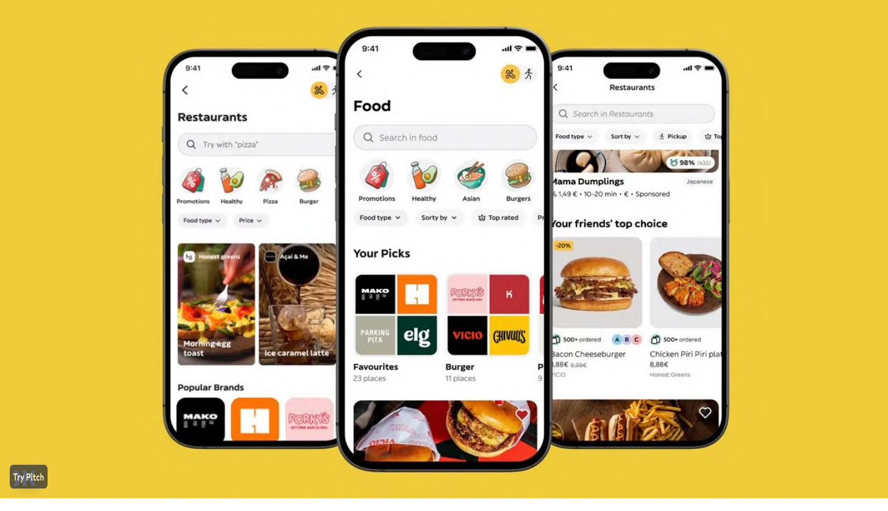
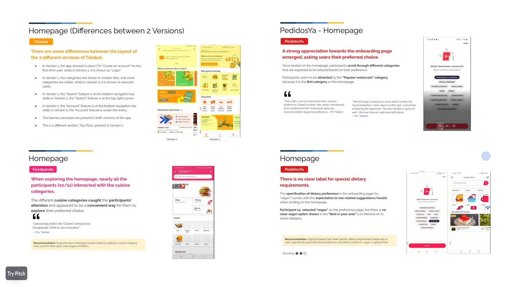
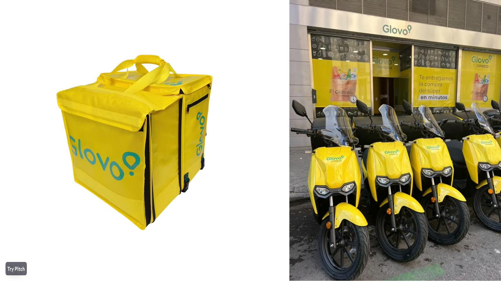

When we joined Glovo, the company had just been acquired by Delivery Hero — one of the world's largest food delivery groups — and was navigating the complexity of scaling across 23 countries while maintaining the product velocity that had made it Europe's leading quick-commerce platform. The design organization was 100+ people strong, spanning UX designers, researchers, motion designers, UX writers, and a localization team managing 19 languages.
The opportunity was clear: connect design output directly to business metrics, elevate research maturity across markets, and use design as a competitive weapon to steal back market share from well-funded local competitors.

One of our highest-visibility initiatives was the design of Glovo's social commerce layer — a set of features that transformed the app from a transactional ordering tool into a socially engaging discovery platform. We co-led two company-wide hackathons with the CPO and CEO to rapidly prototype and validate concepts across: social shopping, friend-based restaurant discovery, shared payment flows, "Picks" lists, and a TikTok-style vertical food video feed.
The social features — including the ability to see where friends have ordered and create shareable restaurant lists — were covered by TechCrunch as part of Glovo Next, the company's first annual product showcase event. We hypothesized that social signals would reduce decision fatigue and increase order frequency, and the early data supported the thesis.


We established dogfooding and user research practices in key markets — running structured competitive research across Glovo's top rivals including Talabat, Foodpanda, and PedidosYa. Our team mapped homepage differences, tested onboarding flows, and identified high-demand features that competitors had but Glovo hadn't yet built. This research directly informed the product roadmap and helped us prioritize the features most likely to close the gap.
The UXR function also introduced localization research — validating product experiences in specific markets before full rollout, reducing costly late-stage rework and building organizational confidence in research as a business tool rather than a nice-to-have.


One of the highest-ROI initiatives we delivered was deceptively mundane on the surface: replacing Glovo's proprietary licensed font with a custom typeface across 19 languages — including Latin, Cyrillic, Georgian, Armenian, and Arabic scripts. The project required designing a typeface that felt cohesive with Glovo's circular brand shapes while functioning correctly across right-to-left writing systems and complex scripts.
The result was €500k+ in annual licensing savings and a stronger typographic system that worked better in markets where the original font had coverage gaps. We ran the entire project as an in-house operation, with our localization team turning around 24-hour translation cycles across all active markets.


The social commerce features were covered by TechCrunch at Glovo Next, Glovo's first annual product event in Barcelona.
Read the TechCrunch article →